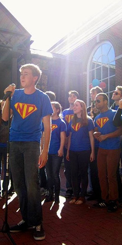

Come Audition For The New Dominions!
Auditions will be held the first week of classes at the beginning of the fall semester. Can't wait to see you there!
If you have any more questions, please send a message to our president, Wesley Webster, at wjw9ba@virginia.edu.
Audition FAQs
To audition for the New Dominions, sign up for an audition slot at the Lawn room listed above. Come to your audition a few minutes early to fill out an audition form. See the questions below for more specifics about the audition process.
As UVa's premier co-ed a cappella group, we are a fun, silly group of dynamic individuals. Music brings us together. Every semester we look for new students to add to our family. We're excited to hear you!
We will start your audition with some warm-ups to test your vocal range. We may also ask you to do some sight-reading, blending or other exercises. Finally, you will sing your prepared solo for us. Don't be nervous! We're about the friendliest people you'll ever meet.
Come prepared with a verse and chorus of a popular song that showcases your voice. No Broadway or Disney, please. We sing popular music, so we'd like to hear you sing a song that fits with our repertoire.
At the end of auditions, we will post a callback list on the door of the audition Lawn room. We will then contact you with more specific callback information.
Like any a cappella group on Grounds, the New Dominions is a pretty big time commitment. We rehearse twice a week for a few hours at a time. We also have frequent gigs both on- and off-Grounds. It is definitely possible to be in involved in other organizations on Grounds – we all are – but Newdos must be a priority.
Shoot us an email on our contact page. Thanks — we can't wait to hear you!